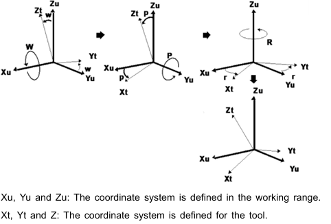
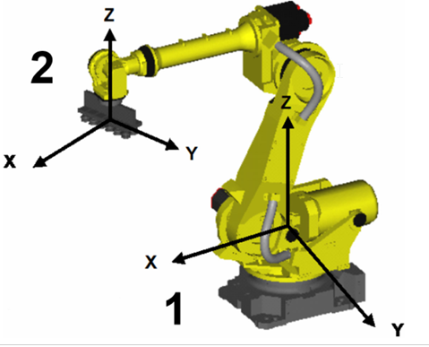

Robot coordinates
details see in: Robot%20Operater%20And%20Program%20manual.pdf
Joint coordinate system
Joint coordinate system The joint coordinate system affects the robot joints. The position and behavior of the robot are defined by angle shifts in relation to the joint coordinate system of the joint base.
JGFRM coordinate system
The Cartesian coordinate system is defined by the coordinates X, Y and Z from the origin of the Cartesian room coordinate system to the origin (tool center point) of the cartesian tool system and angle shift W, P and R of the Cartesian tool coordi nate system with respect to the X, Y and Z axes of the Cartesian room coordinate system. The meaning of (W, P, R) is shown below.
The jog coordinate system is defined by the user. The jog coordinate system is used to move the robot efficiently through the jog feed. The origin of the jog frame is irrelevant for the user as it is only used if the jog frame was selected as a coor dinate system for the manual feed. If the coordinate system is not defined, it is replaced by the world coordinate system.

Xu, Yu and Zu: The coordinate system is defined in the working range. Xt, Yt and Z: The coordinate system is defined for the tool
World coordinate system
This standard coordinate system is fixed in the working range. The coordinate system is fixed in a position determined by the robot. The user and jog coordinate system are based on this. The world coordinate system is used to specify position data and execute corre sponding instructions.

Tool coordinate system The tool coordinate system defines the position of the tool center point (TCP) and the behavior of the tool. The tool coordinate system must be defined. If the tool coordinate system is not defined, the coordinate system of the mechanical interface is applied as an alternative.
User coordinate system
The user coordinate system is defined by the user in every working area. It is used to define a position register, execute the corresponding position register and posi tion compensation instructions, etc. If the user coordinate system is not defined, the world coordinate system is used as an alternative.
See subsequent chapters for more details
NOTICE: If the tool or user coordinate system is changed after teaching the pro gram, the programmed points and widths must be reset. Otherwise, the devices will be damaged
Fanuc specific nomenclature
In Fanuc the motion of the J3 axis is dependent on the motion of J2: J3=J3+J2
Jogging the J3 axis keeps the arm e.g. horizontal. A motion of J3 does not affect J2